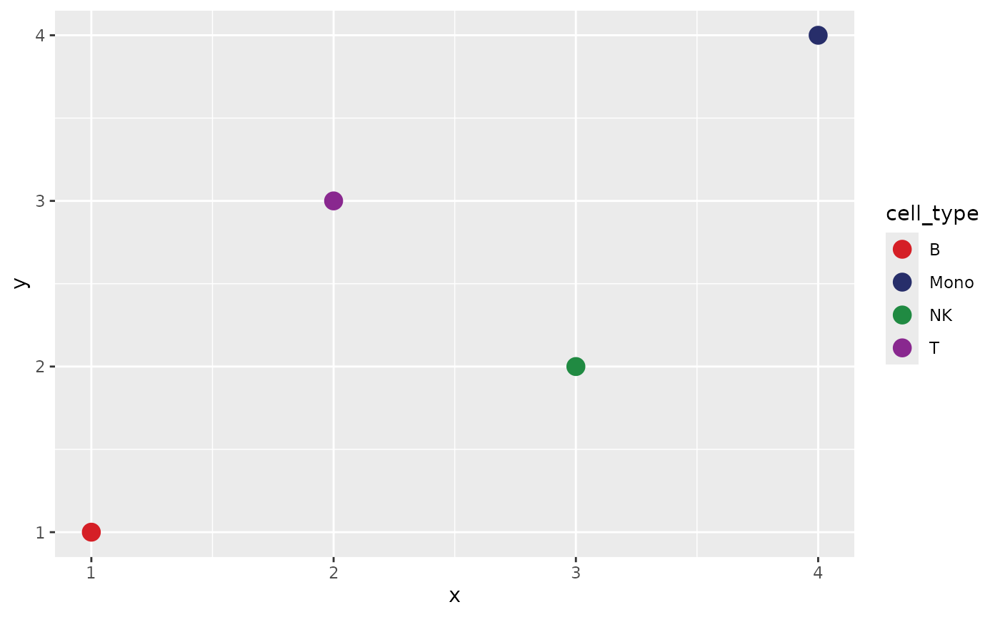

Define the mapping from the full annotation
labels_full <- c("B", "T", "NK", "Mono")
map <- sc_color_map(labels_full, palette = "archr_stallion")
as_named_colors(map)## B Mono NK T
## "#D51F26" "#272E6A" "#208A42" "#89288F"Subsets select names from the same object; they never rerun positional palette assignment.
labels_subset <- c("T", "NK")
subset_colors <- as_named_colors(map)[labels_subset]
stopifnot(identical(
subset_colors,
as_named_colors(map)[c("T", "NK")]
))Factor reordering also leaves the contract intact.
reordered <- factor(labels_full, levels = rev(labels_full))
as_named_colors(map)[levels(reordered)]## Mono NK T B
## "#272E6A" "#208A42" "#89288F" "#D51F26"Add a new annotation
updated <- update_sc_color_map(map, c(labels_full, "DC"))
stopifnot(identical(
as_named_colors(updated)[names(as_named_colors(map))],
as_named_colors(map)
))Export and restore
JSON is used when jsonlite is installed. CSV is always a transparent fallback.
path <- tempfile(fileext = ".json")
write_sc_color_map(updated, path)
restored <- read_sc_color_map(path)
stopifnot(identical(as_named_colors(restored), as_named_colors(updated)))Plot and framework interoperability
dat <- data.frame(
x = seq_along(labels_full),
y = c(1, 3, 2, 4),
cell_type = labels_full
)
ggplot(dat, aes(x, y, color = cell_type)) +
geom_point(size = 4) +
scale_color_sc_map(map)
as_named_colors(map) is a plain named character vector.
It can be passed to Seurat manual scales, SingleCellExperiment plotting
code, ArchR color arguments, or
ComplexHeatmap::HeatmapAnnotation() without loading any of
those frameworks in scChromatic.